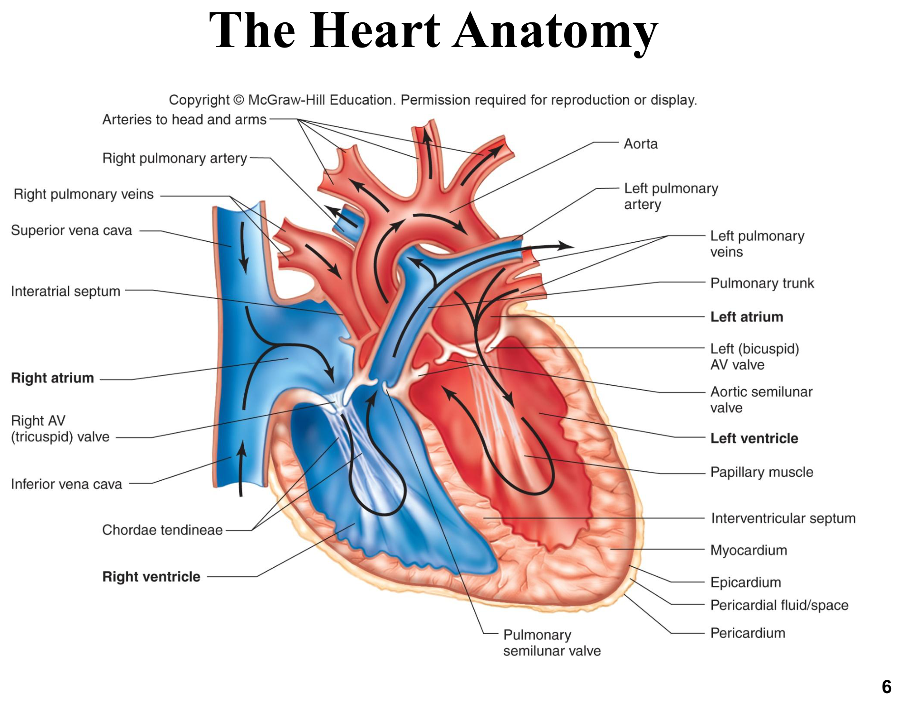
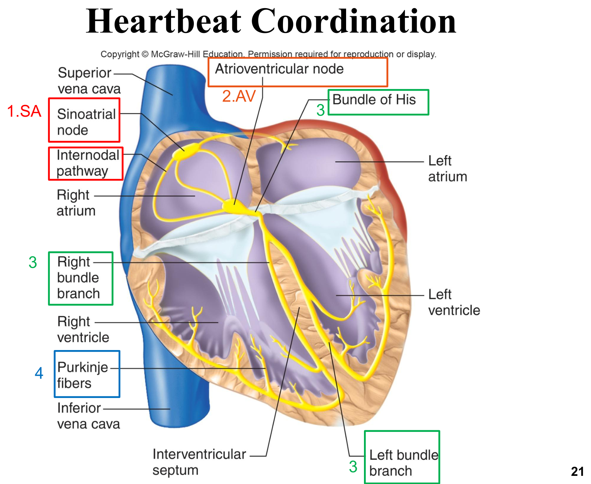
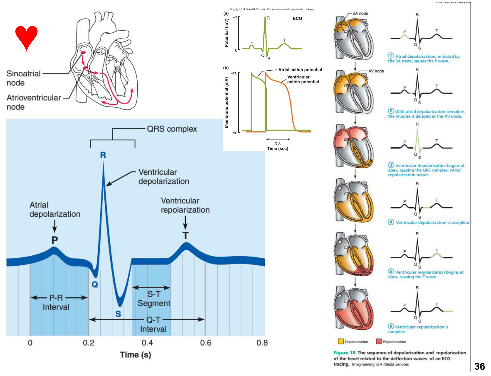
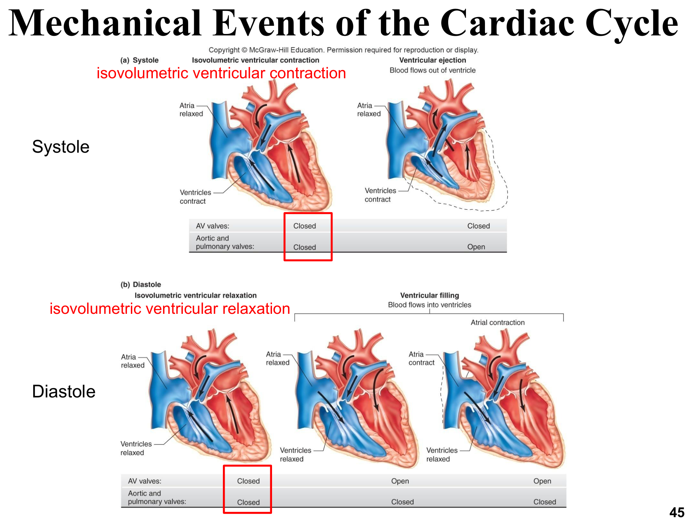
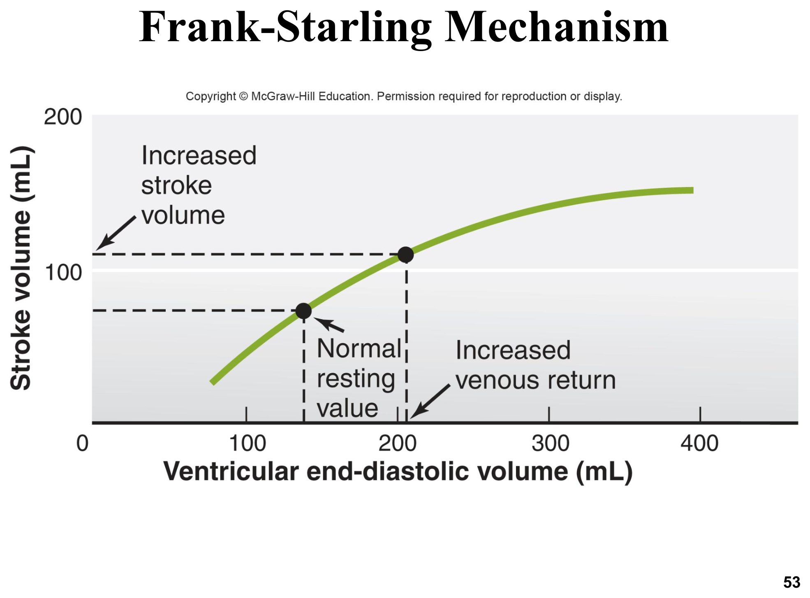

循環系統總覽與心臟構造
循環系統由心臟（幫浦）、血管（管路）、血液（輸送介質）三大元件組成，並受內分泌、神經、腎臟系統共同調節；系統性循環與肺循環構成一個封閉迴路。
兩大循環迴路
將缺氧血自右心室送至肺臟進行氣體交換，含氧血再返回左心房
將含氧血自左心室送至全身組織，缺氧血再返回右心房
心臟三層構造
| 層次 | 組成 | 功能 |
|---|---|---|
| 心外膜 Epicardium | 漿膜性心包臟層 | 最表層保護 |
| 心肌層 Myocardium | 心肌細胞為主，構成心臟主體 | 負責收縮泵血 |
| 心內膜 Endocardium | 內皮＋薄結締組織 | 與進出心臟的血管內膜相連續 |
冠狀動脈血流
心腔內流動的血液不會直接與心肌細胞進行養分交換；心肌本身的血液供應來自主動脈瓣後方分出的冠狀動脈，形成類似其他器官的動脈-微血管-靜脈網絡，多數心靜脈血匯入冠狀竇後注入右心房。
牛因採食習慣易誤食尖銳異物（釘子、鐵絲），異物可能穿過網胃壁與橫膈，最終刺穿心包造成創傷性心包炎（traumatic pericarditis），是反芻動物臨床上需特別警覺的心臟解剖鄰接病因。

心肌興奮收縮偶聯
心肌細胞排列成層層緊密包覆心腔的構造，收縮時如握拳般擠壓腔內血液；每次心跳每個心肌細胞都要收縮，且心肌細胞更新能力極有限（每年僅約1%被替換），這是心肌梗塞後心肌細胞死亡難以修復的細胞生理基礎。
心肌EC Coupling回顧
心肌興奮收縮偶聯的核心蛋白與骨骼肌相同（DHP受體、RyR、SERCA幫浦、肌鈣蛋白TnI/TnC/TnT），但機轉不同——心肌屬於鈣誘發鈣釋放（CICR）：DHP受體本身即是功能性L型Ca²⁺通道，其Ca²⁺內流觸發RyR2大量釋放肌漿網儲存的Ca²⁺，因此心肌收縮力受細胞外Ca²⁺濃度影響（完整機轉比較見「肌肉生理學」章節）。
心臟特異性肌鈣蛋白I（cTnI）與T（cTnT）是廣泛應用的心肌損傷生化指標。臨床案例：一隻年輕米克斯犬車禍送診，外觀無明顯骨折但胸腹撞擊力道大，抽血發現cTnI升高，即為心肌鈍傷（挫傷）證據；研究顯示此類急診犬隻若cTnI升高，未來12–24小時內發生顯著心律不整的風險提高，需加強監控。
傳導系統與節律點自動性
約1%的心肌細胞（節律細胞）不參與收縮，而是特化為傳導系統，經間隙接合與一般心肌細胞電性相連，負責啟動並快速傳播每次心跳的興奮訊號。
心臟傳導系統路徑

竇房結節律點電位（Pacemaker Potential）機轉
竇房結細胞沒有穩定的靜止膜電位，而是持續自發去極化，其節律點電位由五步驟構成：
竇房結節律點電位由F型通道＋T型Ca²⁺通道共同驅動膜電位緩慢爬升至閾值，這與一般神經元／骨骼肌依賴突觸輸入才去極化的機制截然不同——竇房結細胞的「自動性（automaticity）」正是源自於此持續自發的節律點電位循環。
自主神經對心臟的調控
心臟同時受交感與副交感神經支配，兩者作用相反，共同微調基礎心率與收縮力，是理解心臟藥理學（β受體致效劑／拮抗劑、抗膽鹼藥物）的生理基礎。
| 交感神經 SNS | 副交感神經 PSNS | |
|---|---|---|
| 支配範圍 | 整個心肌與節律細胞 | 主要支配節律細胞（尤其SA/AV結） |
| 傳導物質 | 正腎上腺素 NE | 乙醯膽鹼 ACh |
| 受體 | β腎上腺素受體（腎上腺髓質的腎上腺素也作用於同一受體） | 蕈毒鹼型受體 Muscarinic |
| 心率效果 | 正性變時（增加心率） | 負性變時（降低心率） |
增加心率的因子稱正性變時因子（positive chronotropic factor），降低心率者稱負性變時因子；正常靜息狀態下，心臟受副交感神經張力持續些微抑制（迷走張力）。
心電圖 ECG
心電圖是記錄心臟整體電活動的圖形，反映的是全心去極化與再極化波前形成的電偶極（dipole）在體表投影的總和，而非單一動作電位。
ECG波形對應的生理事件
| 波形 | 對應生理事件 |
|---|---|
| P波 | 心房去極化（自SA結傳向AV結）；P波起始後約0.1秒心房開始收縮 |
| QRS複合波 | 心室去極化，先於心室收縮發生；此時心房再極化訊號被QRS波掩蓋 |
| T波 | 心室再極化 |
平均電軸 Mean Electrical Axis (MEA)
將心臟電流投射至360度平面，求得的平均總電流方向即為平均電軸，臨床上MEA偏移可提示心室肥大或傳導路徑異常等結構性變化。

心律不整與傳導阻滯
傳導系統任一環節故障皆可能導致心律不整，理解正常傳導路徑是判讀異常心電圖的基礎。
顫動 Fibrillation
SA結不再主導心率，心房快速不規則收縮，可能導致血栓形成與心室充盈效率下降
更危及生命：心室僅顫動而無有效充盈與泵血，若未快速恢復規律節律將導致循環停止、腦死；電擊去顫（defibrillation）可重建SA結主導的正常節律，慢性病例需植入心律調節器
異位節律點與傳導阻滯
異位節律點（ectopic pacemaker）指傳導系統中原本非主節律點的細胞取代SA結主導興奮；若SA結受損，AV結可接手（約60次/分，仍足以維持循環）。房室傳導阻滯（heart block）依嚴重度分級：部分阻滯訊號變慢但仍能通過；完全阻滯時心室僅依賴蒲金氏纖維自身極慢的固有節律（過慢無法維持有效循環），需植入心律調節器治療。
拳師犬（Boxer）好發的ARVC，因心室肌肉出現異常脂肪或纖維脂肪浸潤病變（以右心室最嚴重），造成心肌多處異常放電、嚴重心律不整、低血壓、無力、反覆癱軟。臨床常用Sotalol（Class III抗心律不整藥，延長心肌動作電位有效不反應期）或Mexiletine（Class I抗心律不整藥，減緩傳導、降低自動性與興奮性，屬膜穩定藥物）控制病情。
心動週期
心動週期涵蓋一次心跳中血液流經心臟的所有機械事件，可分收縮期（systole）與舒張期（diastole）兩大階段，各自再細分數個子階段。
心動週期的機械子階段
心室收縮期始於等容收縮（isovolumetric ventricular contraction）——心室開始收縮、壓力上升，但房室瓣與半月瓣皆關閉，容積不變；壓力超過動脈壓後半月瓣開啟進入射血期。舒張期則始於等容舒張（isovolumetric ventricular relaxation）——心室開始放鬆、壓力下降，但兩組瓣膜仍關閉，容積不變，直到壓力低於心房壓後房室瓣開啟進入充盈期。
等容舒張所需時間（isovolumetric relaxation time, IVRT）是評估心臟舒張功能的重要超音波指標，過長或過短皆提示舒張功能異常；正確測量時間點是主動脈瓣／肺動脈瓣關閉後、房室瓣尚未開啟前的這段間隔。

心輸出量、每搏量與Frank-Starling
心輸出量是評估心臟整體幫浦功能的核心指標，其決定因子（心率×每搏量）與每搏量本身的調控機轉（前負荷、後負荷、收縮力）是心臟生理學的核心整合概念。
核心公式與定義
| 指標 | 定義／公式 |
|---|---|
| 每搏量 Stroke Volume (SV) | SV = EDV − ESV（每次收縮心室排出的血量，約為心室內血量的60%） |
| 心輸出量 Cardiac Output (CO) | CO = HR × SV（每分鐘單一心室輸出的血量） |
| 射出分率 Ejection Fraction (EF) | EF = SV / EDV，靜息狀態正常約50–75%，收縮力增加時EF上升 |
前負荷與Frank-Starling機轉
前負荷（preload）是心肌細胞收縮前被拉伸的程度，主要由靜脈回流量（決定EDV）決定；依「長度-張力關係」（見「肌肉生理學」章節最佳長度概念），適度拉伸可提升收縮力，過度拉伸則效率下降。Frank-Starling定律指出：控制每搏量的關鍵因子是前負荷——EDV增加（如運動時靜脈回流增加、或心跳變慢使充盈時間延長）會使每搏量隨之增加，這是心臟能自動因應靜脈回流變化而調整輸出量、維持左右心輸出平衡的核心機轉，不需額外神經訊號介入。

後負荷 Afterload
心室必須克服才能推開主動脈瓣／肺動脈瓣的壓力，任何提高系統性或肺動脈壓力的因素（如高血壓）皆會增加後負荷，長期後負荷過高會促使心室代償性肥大。
收縮力的外在調控
除前負荷外，交感神經（NE作用於β1受體）與激素（甲狀腺素可增強收縮力）也能獨立於前負荷之外提升收縮力（正性變力作用，positive inotropic effect），使同樣EDV下能射出更多血量、提升EF。
心房利鈉肽 ANP
心房特定細胞在心房壁過度伸張（血容量過高）時分泌心房利鈉肽（ANP），作用包括增加腎絲球過濾率、增加腎臟排鈉排水、造成血管舒張，是心臟對血容量過高的代償性回饋機制之一（詳見「血管生理學」章節ANP作用）。
心音與雜音
正常血流平順流動時應是無聲的，異常聲音（雜音）多提示血流遭遇阻礙產生亂流，是臨床心臟聽診判讀的生理基礎。
心臟雜音 Heart Murmur
血流碰到阻礙物時由層流轉為亂流（turbulent flow），產生可用聽診器聽到的聲音；多數雜音成因為瓣膜異常：瓣膜閉鎖不全（incompetent，關閉不完全）產生逆流的「咻咻聲」；瓣膜狹窄（stenotic）產生高頻的「喀嚓聲」或尖銳音。
心臟功能的臨床測量方法
非侵入性超音波技術，可偵測瓣膜異常功能或心壁收縮異常，也可用於測量射出分率
經導管注入顯影劑並配合高速X光攝影，用於評估心臟功能與辨識狹窄的冠狀動脈
學習重點整理
本章的核心是理解心臟如何自主產生節律、如何傳導、以及如何將電興奮轉換為有效率的機械泵血。考題常考「傳導路徑順序」「竇房結節律點電位機轉」「Frank-Starling機轉」「ECG波形對應事件」。
練習題
涵蓋心臟傳導、ECG判讀、心動週期、心輸出量調控、心律不整等章節重點，題型參照國考與轉學考命題方向（含計算題與臨床病例題），先自己作答再點「顯示答案」核對。
正常興奮由竇房結（SA node）發起，經房內傳導路徑到達房室結（AV node，此處有約0.1秒延遲讓心房收縮完成），再經希氏束（房室束）傳至蒲金氏纖維，最終興奮心室肌。
Frank-Starling定律指出，前負荷（由靜脈回流量決定的心室舒張末期容積EDV）是控制每搏量的關鍵因子，EDV增加會使每搏量隨之增加，此機轉是心肌本身的長度-張力特性所致，不需要額外的神經訊號介入，使心臟能自動因應靜脈回流變化維持左右心輸出平衡。
QRS複合波是心室去極化的結果，且發生在心室收縮之前；此時心房再極化的訊號因幅度小且時間點重疊，被QRS波掩蓋而無法在心電圖上單獨辨識。T波才是心室再極化的訊號。
竇房結細胞不像一般心肌細胞或神經元擁有穩定的靜止膜電位，而是持續自發性地緩慢去極化。此節律點電位由多個離子通道依序作用構成：首先K⁺通透性漸進下降使膜電位緩慢上升；接著F型通道（funny channel）開啟使Na⁺內流，持續推升膜電位；隨後短暫型（T型）Ca²⁺通道開啟，將膜電位推升超過閾值；此時L型Ca²⁺通道開啟造成真正的去極化（動作電位上升支）；最後K⁺通道開啟、K⁺外流使膜電位回復負值，準備進入下一輪循環。正是這個不依賴外部突觸輸入、能自發持續循環的節律點電位機轉，賦予竇房結細胞自動產生規律動作電位的「自動性」，使其成為心臟正常的節律點。
正常血流平順無聲；瓣膜狹窄使血流通過時受阻形成高速噴射的亂流，產生高頻喀嚓聲或尖銳音；瓣膜閉鎖不全（關閉不完全）則使血液逆流，產生咻咻聲（swishing sound）。兩者的聲音特徵與發生時機（收縮期/舒張期）是臨床心臟聽診鑑別瓣膜疾病種類的重要依據。
心肌動作電位有延長的去極化平原期（見ECG波形圖中的心室動作電位），使絕對不反應期幾乎與收縮期等長，此設計確保下一個興奮無法在前一次收縮完全結束前提早發生，因此心肌不會像骨骼肌一樣發生強直收縮。若心肌強直，心臟將失去規律的舒張充盈期，無法有效泵血，是致命的生理狀態，此為國考常考的骨骼肌vs心肌關鍵差異考點。
等容收縮期是心室已開始收縮、壓力上升，但尚未超過動脈壓，因此房室瓣（已因心室壓力上升而關閉）與主動脈/肺動脈瓣（尚未被推開）皆處於關閉狀態，心室容積在此期間維持不變（故稱「等容」），直到心室壓力超過動脈壓後半月瓣才開啟進入射血期。等容舒張期則是相反狀況下的另一組瓣膜全關閉時期。
交感神經支配整個心肌與節律細胞，釋放正腎上腺素（NE）作用於β腎上腺素受體，屬正性變時因子（增加心率）；腎上腺髓質釋放的腎上腺素也作用於同一受體、產生相同效果。副交感神經主要支配節律細胞（尤其SA/AV結），釋放乙醯膽鹼作用於蕈毒鹼型受體，屬負性變時因子（降低心率）。此組合是理解β受體阻斷劑（如propranolol）與抗膽鹼藥物（如atropine）心臟藥理作用的基礎。
EF = SV / EDV，故 SV = EF × EDV = 0.6 × 60 mL = 36 mL。這類數值代換題是國考與轉學考常見的計算題型，務必熟記 SV = EDV − ESV、EF = SV/EDV、CO = HR × SV 三個核心公式間的關係，才能靈活應對不同已知條件的計算題。
心肌與骨骼肌的EC coupling核心蛋白雖相同（DHP受體、RyR、SERCA、肌鈣蛋白），但機轉不同：骨骼肌是DHP受體與RyR1的直接機械偶聯，不需細胞外Ca²⁺流入；心肌則是鈣誘發鈣釋放（CICR），DHP受體本身是功能性L型Ca²⁺通道，其Ca²⁺內流觸發RyR2大量釋放，因此心肌收縮力會直接受細胞外Ca²⁺濃度影響——這也是鈣離子通道阻斷劑（如diltiazem）能降低心肌收縮力的藥理基礎，是動物生理學與獸醫藥理學跨科整合的常見考點。
房室結是心房與心室間唯一的正常電性溝通路徑，完全阻滯時心房訊號完全無法傳至心室，此時心室僅能依賴蒲金氏纖維本身的固有自動性維持跳動，但其固有速率過慢，通常不足以維持有效血液循環，臨床上需植入心律調節器治療。若僅SA結受損（而非AV結），AV結才能以約60次/分的速率接手，仍足以維持基本循環——這是分辨「SA結受損」與「AV結受損（心臟傳導阻滯）」臨床後果差異的關鍵考點。
犬心律不整性右心室心肌病變（ARVC）好發於拳師犬，病理機轉是心室肌肉（尤其右心室最嚴重）發生異常的脂肪或纖維脂肪浸潤，破壞正常心肌細胞間的電性連結與傳導路徑，導致心肌多處出現異常自發放電（異位節律點），引發嚴重心室性心律不整，進而造成低血壓、虛弱、反覆癱軟等臨床症狀。Sotalol屬於第三類抗心律不整藥物，作用是延長心肌動作電位的有效不反應期，使異常放電更不易引發連續性的異常興奮傳導；Mexiletine屬於第一類抗心律不整藥物（膜穩定藥物），作用是減緩傳導速度並降低心肌細胞的自動性與興奮性，兩者透過不同機轉共同抑制病灶處的異常放電與異常傳導，達到控制心律不整的效果。